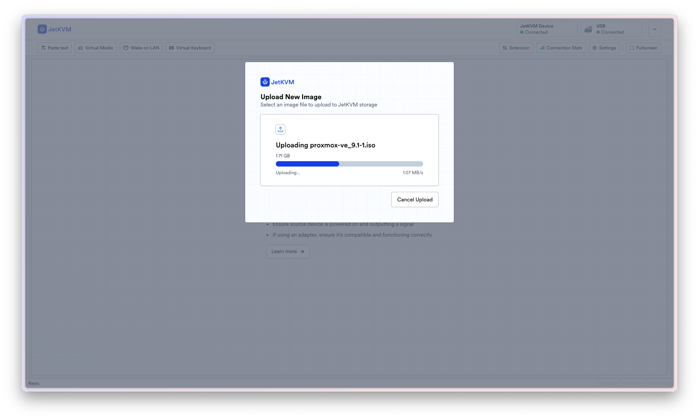
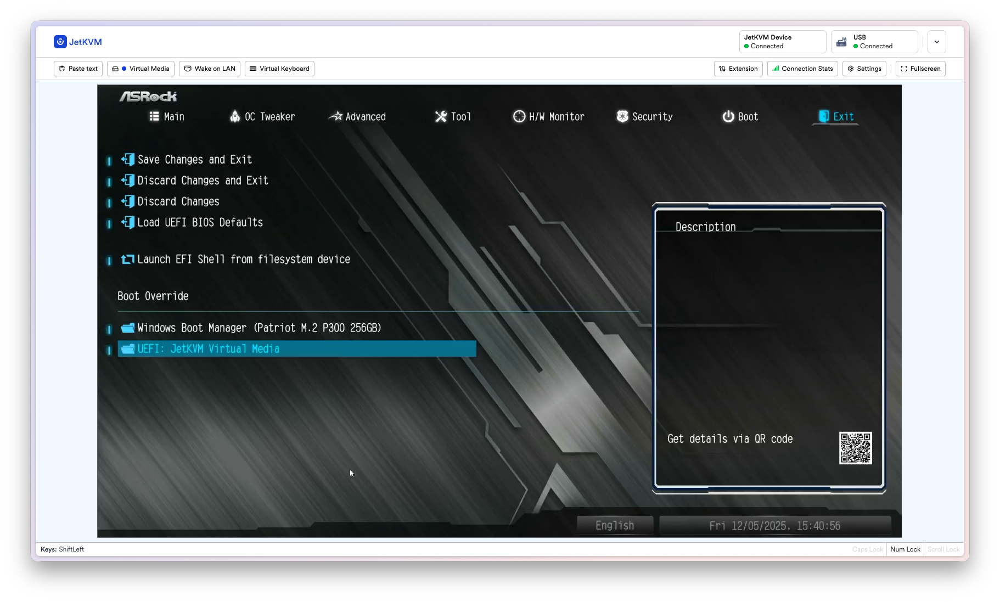
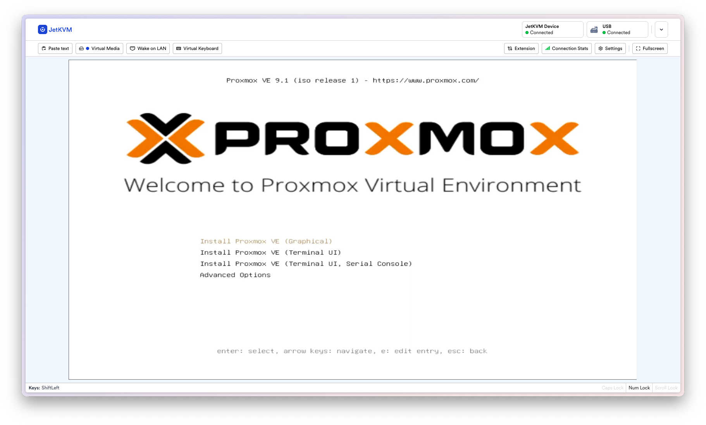
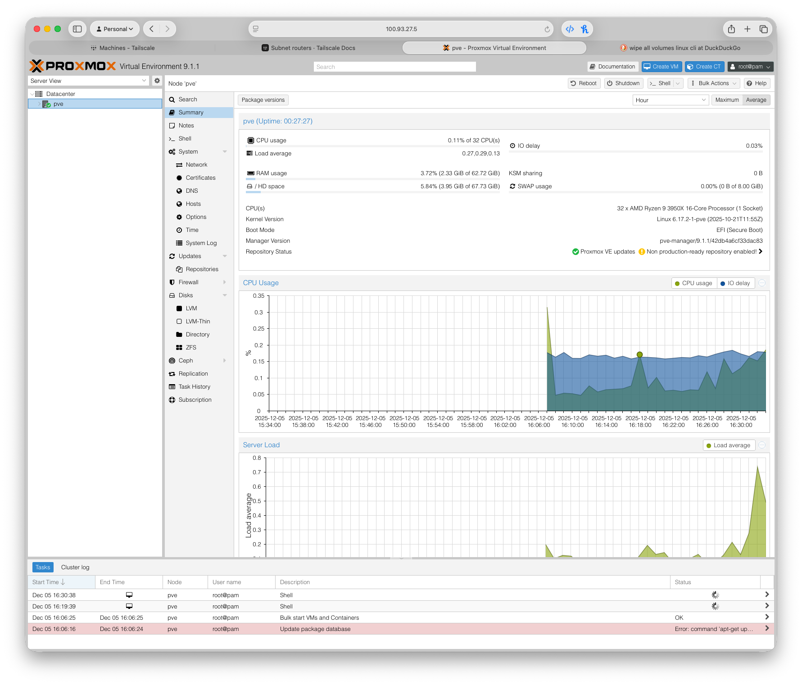
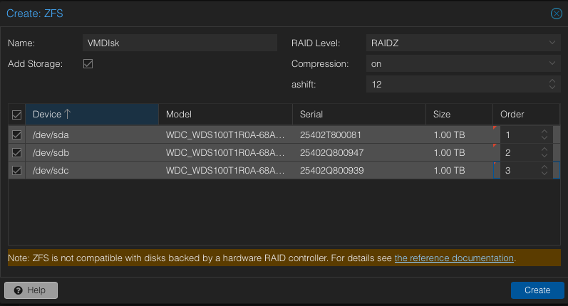

Hardware & System Design
Hardware Procurement
| Component | Specification | Rationale |
|---|---|---|
| Processor | AMD Ryzen 9 3950X (16-core) | Utilized existing hardware, providing high thread count ideal for virtualization. Performance Boost Overdrive (PBO) was disabled. My workload doesn't require higher burst frequencies, so disabling it helps manage thermals and power consumption. |
| Memory | 64GB (4x16GB) 2133MHz ECC Unbuffered DDR4 | Selected ECC to ensure data integrity with ZFS. Purchased used, which was cheaper than non-ECC 64GB kits at the time of procurement. |
| Motherboard | ASRock B550M Pro4 | Chosen for its ECC support, ample I/O, and affordable mATX form factor. Utilized existing hardware. |
| VM Storage Pool | 3x 1TB WD Red SA500 SATA SSDs | NAS-grade reliability with DRAM cache, selected due to a sale making them an affordable option in the realm of higher end SSDs. |
| Backup Storage | 2x 4TB Seagate IronWolf HDDs | Dedicated storage for Proxmox Backup Server (PBS) to ensure data redundancy and long-term retention. |
| PVE Boot Drive | 256GB Patriot NVMe SSD | Selected a name-brand boot drive without overspending. |
| Chassis/Cooling | Cooler Master NR400 / Thermalright PA 120 SE | The cooler offers high performance for cost, keeping the CPU cool and quiet. The chassis provides a compact size with high airflow, and supports the required drive bays (4x 2.5" SSDs, 4x 3.5" HDDs). |
| Power Supply | Seasonic Focus GX 850W | Legendary 10 year warranty, 80+ Gold certification, and 850W power rating to support my storage devices and potentially a GPU for future AI use. |
| Graphics | NVIDIA GeForce GT 710 | Required for POST and remote management. Highly available on the used market and affordable. |
| UPS | APC Back-UPS RS 1500G | Selected for its plentiful availability on the used market, affordable replacement batteries, and extensive community support for Network UPS Tools (NUT). |
Proxmox VE (PVE) Base Installation & BIOS
BIOS Configuration
- Virtualization Support: Set SVM (Secure Virtual Machine) and IOMMU to ON (required for virtualization and device passthrough).
- Power Management: Set Restore on Power Loss to ON. Enabled Power Delivery when OFF to ensure the JetKVM receives necessary power. Enabled Wake-on-LAN.
- Security: Enabled Secure Boot and TPM.
PVE Installation
- Remote Installation: PVE ISO was uploaded to the JetKVM for remote mounting and installation.
- GPU Driver Workaround: Installation initially failed due to the NVIDIA
graphics
card. This was resolved by appending the
nomodesetkernel parameter to the text-mode boot option, disabling all graphics drivers. This solution was found in the Proxmox wiki. - Setup: Installed on the NVMe SSD with default settings, EXT4 filesystem, and default network configuration.




Post-Install Configuration
- Networking: A DHCP reservation was created on the router to lock in the host IP (10.0.1.5).
- Security: Configured 2FA TOTP for the administrative user. Disabled the paid subscription repository.
- Remote Access: Immediately installed Tailscale on PVE with the
curl -fsSL https://tailscale.com/install.sh | shcommand.

High-Availability Storage Design (ZFS)
RAIDZ1 Pool: A RAIDZ1 array was created across the three NAS SATA SSDs. RAIDZ1 was chosen for its balance of usable space and redundancy. While parity calculations do weaken performance, my use case is not performance-critical and higher capacity is preferred. My CPU is powerful enough to handle the additional load.
Alignment: ZFS block alignment was set to ashift=12 for I/O
optimization.
Capacity: The total available space after formatting was 1.75TB.
